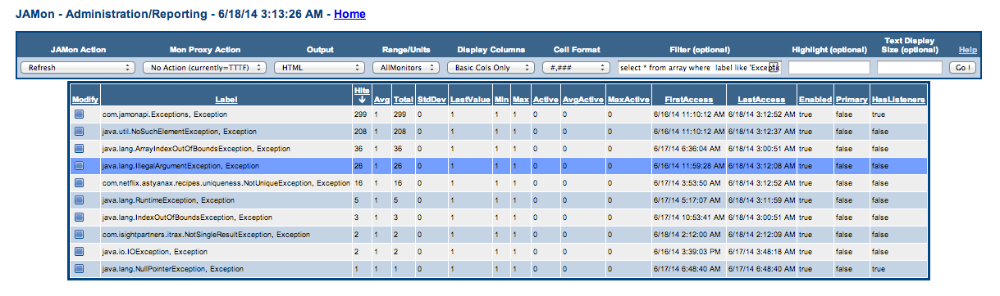

1. Introduction |
|---|
|
JAMon and Aspect Oriented Programming are a perfect pairing. JAMon can wrap any method call and track concurrency, performance, exceptions and also view the N most recent invocations to name a few of the possibilities. With JAMon you can monitor all of your Spring beans using either annotations or by putting a few lines in your applicationContext.xml file. This page will give information on how to use JAMon and Spring together. It should only take a few minutes to start monitoring all your Spring beans. Spring comes with the JamonPerformanceMonitorInterceptor which also allows you to monitor your Spring beans with JAMon. Feel free to use it if you wish. The two approaches both do about the same thing. The only difference in the collected data is that the JamonAspect also allows you to track the parameters that were past to the method.
Note1: It should be noted that it would be easy to change the code in JamonPerformanceMonitorInterceptor to perform all of the above. In the future, I will try to work with the Spring team to get them to enhance their code. Note2: Spring may use the CGLIB proxy mechanism. If so, any class being monitored requires a noarg constructor. The constructor can be private however. It also requires setters for any of the variables that the actual constructor takes (say a 2 arg constructor). These setters may also be private. |
2. How does it work? |
|
There are various ways to configure the JamonAspect to monitor your spring beans. AspectJ's pointcut language is very powerful and flexible. It allows you to associate an aspect to all classes in a given package, all classes with a given annotation, classes that match a pattern and much more. You can also choose not to monitor the whole class, and instead monitor select methods. To learn more about aop and AspectJ's pointcuts see Spring aop See minimalAppplicationContext.xml for a simple example of how to monitor a spring bean using a bean name. See applicationContext.xml for more examples of how to use aop and Spring together. This file has a number of other ways to define pointcuts that are commented out. By looking at the file you may see some options that might fit your use case. JamonAspectTest test class show how these files are used in Spring. The next section shows JAMon data generated by executed the test method JamonAspectTest.testMethodsAreMonitored(). |
3. What does it look like? |
|
Representative data collected by JamonAspect follows. The screen snapshot was taken from a jamonadmin.jsp in jamon.war. Review applicationContext.xml to see how all methods were selected for monitoring. Note as mentioned in the introduction exceptions are being tracked (com.jamonapi.Exceptions, and java.io.FileNotFoundException). All methods were called 10 times (hits).
Here is an example of how it might look like if your application had thrown a wider variety of exceptions. Note this screen was filtered to only view exceptions.  If the 'modify' icon is clicked for 'com.jamaonapi.Exceptions' you can view the 'FIFOBuffer' which contains the stacktraces.
The following screen snapshot shows what it might look like if exception arguments tracking was also enabled. You can see the stacktrace, the method that threw the exception as well as the arguments passed to the method (in this case 1 argument was passed and it was a filename: arguments.txt).
|